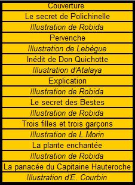

Un autre moyen publicitaire assez particulier à Mariani, ce fut les « Contes », une série de quatorze ouvrages destinés aux bibliophiles. Publiés en éditions strictement limitées, grand in-4°, sur du papier spécial Japon, Vélin ou Arches, ils furent épuisés presque aussitôt. Pour chacun de ces contes, Mariani demandait à un auteur et un illustrateur de créer une histoire sur un thème dont le Vin Mariani ou la bienfaisante coca ferait partie intégrante. Chaque conte est orné, dans le texte et hors texte de belles et curieuses illustrations dues aux crayons d'A. Robida, Henri Pille, F. Lunel, Atalaya, Louis Morin, Eugène Courboin, Léon Lebègue. En voici deux exemples:
|
Balayer la liste pour faire apparaître les gravures  |

|
Couvertures et illustrations de "Huit contes"

Fond sonore: "Honneur au Vin Mariani" composé par Charles Gounod